الانتربرونور الصغير
حكاية مشروع صيفي، ودليل اللعب

adam.ahmedhaz.com/littlebreneur


الانتربرونور الصغير
The Little Entrepreneur
حكايات عن ملك ويوسف وجدّو، ودليل للعبة المجانية.
مكتوبة للأطفال من 8 إلى 12 عامًا، وللكبار الذين يقرؤون معهم.
الصور: رسومات صوف ملبّد صُنعت لهذا الكتاب. الخطوط: Manrope و Readex Pro (رخصة SIL المفتوحة).
مجاني للطباعة والمشاركة مع العائلة والأصدقاء والمدارس.
© 2026 adam.ahmedhaz.com
إلى الكبار
لهذا الكتاب جزءان. تتبع الحكايات الأربع ملك ويوسف خلال أربعة فصول صيف: كشك عصير، ورسومات وأساور، وغسيل الدراجات، ومخبز صغير. وينتهي كل مشهد بفكرة من أفكار جدّو عن المال: التكلفة والسعر والربح والادّخار والبضاعة والاستثمار والزبائن والأمانة والراحة.
ويشرح الجزء الثاني طريقة لعب «الانتربرونور الصغير»، اللعبة المجانية التي خرجت منها الحكايات. تعمل في أي متصفح وعلى الهواتف، بلا إعلانات ولا حسابات ولا مشتريات.
طريقة مقترحة: قراءة مشهد واحد معًا، ثم الحديث عن فكرة جدّو، ثم ترك الطفل يجرّبها في اللعبة. وبعد الحكايات صفحات أنشطة، وأسئلة للنقاش، وصفحة لتخطيط مشروع صغير حقيقي، وشهادة.
المحتويات
- الحكاية 1: كشك العصير4
- الحكاية 2: رسومات وأساور17
- الحكاية 3: غسيل الدراجات وإصلاحها27
- الحكاية 4: كيك وكوكيز37
- دورك: خطة مشروع صغير47
- لنتحدّث48
- الجزء الثاني: طريقة لعب الانتربرونور الصغير49
- المشاريع الأربعة57
- كلمات مهمة58
- شهادة59

الصيف يبدأ
في أول يوم من الصيف، كانت لدى ملك ويوسف خطة. قالت ملك: «عيد ميلاد ماما في آخر الصيف، ونريد أن نشتري لها هدية حقيقية.» أفرغ يوسف جيوبه: 15 عملة، وتنهّد: «هذا لا يكفي.» وضع جدّو كوب الشاي وقال: «إذن لنكسب الباقي. ماذا يريد الناس هنا في يوم حار؟» فصاحا معًا: «شيئًا باردًا!»

كل مشروع يبدأ بشيء يريده الناس.

كم يكلّف الكوب الواحد؟
فتح جدّو دفتره القديم وقال: «ليمون وسكر وماء وكوب ورقي. لنحسب.» جمعا كل شيء وقسماه على عدد الأكواب. قال يوسف: «الكوب الواحد يكلّفنا عملة واحدة.» فقال جدّو: «هذه هي التكلفة. كل كوب نصنعه ندفع ثمنه، حتى لو لم يشتره أحد.»
التكلفة هي ما ندفعه لنصنع الشيء.

اختيار السعر
عملتان أم 3 أم 5 للكوب؟ قال يوسف: «5! نقود أكثر!» هزّت ملك رأسها: «بـ5 سيتوقف عدد أقل من الناس. وبعملتين سيأتي كثيرون، لكن لن يبقى لنا من كل كوب إلا عملة واحدة.» ابتسم جدّو: «جرّبا 3. سعر عادل لهم، وعادل لكما.» وكتبا على اللافتة بخط كبير: 3 عملات.
السعر الغالي يجلب زبائن أقل، والرخيص يجلب ربحًا أقل من كل كوب.

يوم السوق!
يوم السبت صنعا 12 كوبًا. كانت الشمس مشرقة، والجيران في الخارج. وقبل الظهر بِيع 11 كوبًا. عدّ يوسف النقود مرتين: 33 عملة، وهتف: «صرنا أغنياء!» قال جدّو: «على مهلك. كم كلّفت الأكواب؟» «12 عملة.» «إذن كم بقي؟»
عدّ النقود التي دخلت نصف الحكاية فقط.
الربح

كتبت ملك على ظهر اللافتة: دخلت 33 عملة، وخرجت 12 عملة، والربح 21 عملة. قال جدّو: «الربح هو ما يبقى بعد دفع كل شيء.» ووضع يوسف العملات الـ21 في الحصّالة ببطء شديد، واحدة بعد واحدة.
الربح = النقود الداخلة − النقود المصروفة.

سبت ماطر
في السبت التالي صنعا 20 كوبًا. ثم جاءت الغيوم. توقّف 6 أشخاص فقط، وكانوا يريدون شيئًا دافئًا. وفي المساء سُكب 14 كوبًا من العصير في الحوض. قال يوسف بهدوء: «لقد دفعنا ثمنها.» فقالت ملك: «في المرة القادمة ننظر إلى السماء أولًا، ونصنع بقدر ما سيشتري الناس تقريبًا.»
البقايا التي تفسد نقودٌ تُرمى في سلّة المهملات. وصنع كمية أقل مهارة.

حامض جدًا!
أخذ العم سعيد رشفة واحدة وتجهّم وجهه، وقال بصوت سمعه الطابور كله: «حامض جدًا!» احمرّ وجه يوسف. أما ملك فصبّت كوبًا جديدًا بسكر أكثر وقالت: «هل تخبرنا إن كان هذا أفضل؟» جرّبه وهزّ رأسه موافقًا وقال للطابور: «الآن صار ممتازًا.» وفي ذلك العصر غيّرا الوصفة نهائيًا.
الشكوى نصيحة مجانية.

6 عملات زائدة
عند الإغلاق كان في الصندوق 6 عملات زائدة. قالت ملك: «السيدة صاحبة السلّة الخضراء دفعت زيادة.» قال يوسف: «لن يعرف أحد.» نظرت إليه ملك. فتنهّد يوسف، وركضا خلفها في الشارع. ضحكت السيدة: «لم يركض خلفي أحد من قبل ليُرجع لي نقودًا!» وفي السبت التالي عادت ومعها صديقتان.
الثقة مثل الادّخار: تُبنى ببطء وتُصرف بسرعة.

الكشك المجاور
ذات صباح نصب ولد أكبر اسمه كريم كشك عصير على بعد 5 خطوات. اللافتة نفسها والأكواب نفسها والسعر نفسه. قال يوسف: «لقد قلّدنا!» ارتشف جدّو شايه وقال: «إذن اسألا نفسيكما: ما الذي يميّزكما؟» وخطرت لملك فكرة، فذهبت وتحدّثت مع كريم. والآن يبيع كريم الفشار، ويبيعان العصير، والناس يشترون الاثنين.
عندما ينسخك أحد، يصبح السؤال: ما الذي يميّزك؟

تعب يُربك الحساب
في الأسبوع 6 سهرا حتى وقت متأخر يصنعان 30 كوبًا. وفي اليوم التالي كانت أعينهما تنغلق من النعاس. وردّ يوسف لأحد الزبائن 5 عملات باقيًا بدل عملتين. ونسيت ملك الثلج. قال جدّو: «مع التعب تقع أخطاء صغيرة. والراحة جزء من العمل.» فلعبا الكرة يوم الأحد، وأنجزا واجباتهما، وناما مبكرًا.
الراحة جزء من العمل.

اللعبة الجديدة
صارت الحصّالة ثقيلة. ثم بدأ الجميع في النادي الصيفي يتكلّمون عن لعبة فيديو جديدة سعرها 30 عملة. همس يوسف: «معنا ما يكفي.» نظرت ملك إلى الحصّالة، ثم إلى صورة ماما على باب الثلاجة. وانتظرا. وبعد 3 أسابيع صارت اللعبة نفسها بـ18 عملة. فابتسما، وواصلا الادّخار.
الادّخار يعني تقديم الحلم الكبير على الرغبة السريعة.

آخر يوم في الصيف
في آخر سبت فتح يوسف الحصّالة، وعدّا كل عملة مرتين: 236 عملة. وثمن هدية ماما 220 عملة. فهتفا: «نجحنا!» ودمعت عينا ماما من الفرح حين فتحتها. وأعطى جدّو كلًّا منهما ملصقًا وقال: «لم تكسبا نقودًا فقط، بل تعلّمتما كيف يعمل المشروع.» وبدأت ملك تخطّط للصيف القادم.
كل عملة لا تُصرف اليوم تقرّب الهدف خطوة.
أفكار جدّو
كل أفكار صيف العصير في مكان واحد. وفي اللعبة تصبح كل فكرة ملصقًا.
كل مشروع يبدأ بشيء يريده الناس.
التكلفة هي ما ندفعه لنصنع الشيء.
السعر الغالي يجلب زبائن أقل، والرخيص يجلب ربحًا أقل من كل كوب.
عدّ النقود التي دخلت نصف الحكاية فقط.
الربح = النقود الداخلة − النقود المصروفة.
البقايا التي تفسد نقودٌ تُرمى في سلّة المهملات. وصنع كمية أقل مهارة.
الشكوى نصيحة مجانية.
الثقة مثل الادّخار: تُبنى ببطء وتُصرف بسرعة.
عندما ينسخك أحد، يصبح السؤال: ما الذي يميّزك؟
الراحة جزء من العمل.
الادّخار يعني تقديم الحلم الكبير على الرغبة السريعة.
كل عملة لا تُصرف اليوم تقرّب الهدف خطوة.
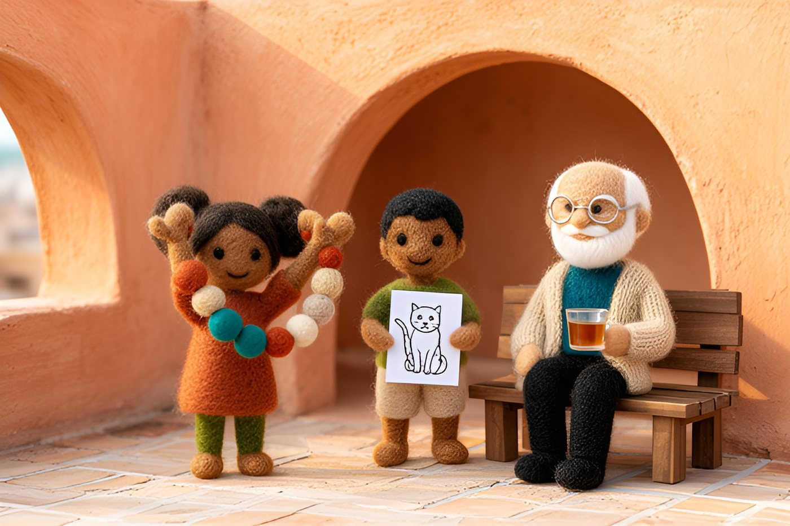
صيف جديد وفكرة جديدة
بعد عام عاد الصيف، وعادت الخطة معه. هذه المرة كان ملك ويوسف يدّخران لمجموعة كتب حكايات ثمنها 160 عملة. قالت ملك: «لا عصير هذا العام.» ورفعت سوارًا من خرز مستدير. ورفع يوسف رسمته لقطة الشارع وقال: «كل من في النادي يسأل من أين جئنا بهذه.» ابتسم جدّو: «إذن عندكما مشروع بالفعل. أنتما تجيدانه، والناس يريدونه.»
أفضل مشروع يجمع بين ما نجيده وما يريده الناس.
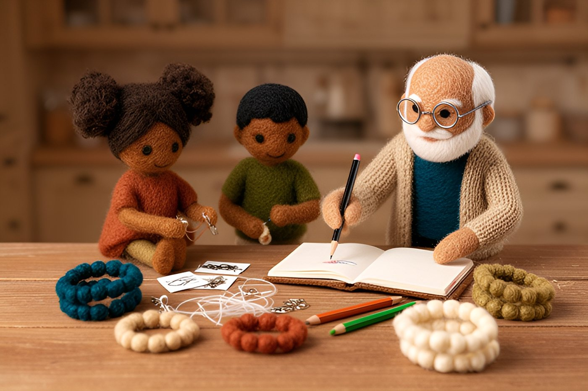
التكاليف الصغيرة تتجمّع
قال يوسف: «الخيط لا يكلّف شيئًا تقريبًا.» ففتح جدّو دفتره: «لنحسب كل شيء على أي حال.» خرز وخيط ومشبك صغير. وورق، وأقلام ألوان تقصر كل يوم. جمعوا كل شيء، فإذا السوار الواحد يكلّف عملتين، والرسمة الواحدة تكلّف عملتين أيضًا. قالت ملك: «كل شيء صغير وحده، لكنها معًا ليست صغيرة.»
التكاليف الصغيرة تتجمّع، فلنحسبها كلها.
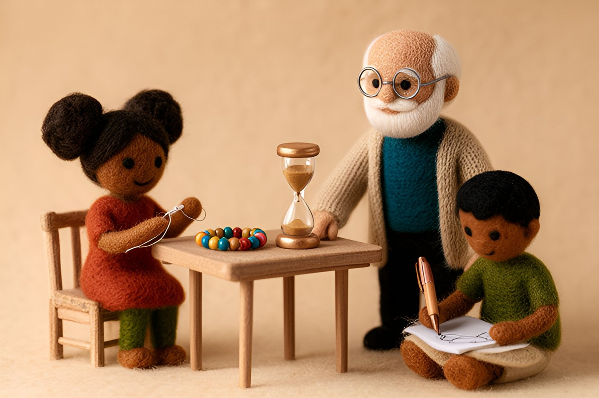
كم تساوي ساعة من العمل؟
أرادت ملك أن تبيع السوار بـ3 عملات، وقالت: «لا أريد أن أطلب كثيرًا.» سألها جدّو: «كم يستغرق السوار الواحد؟» «ساعة تقريبًا.» «يكلّف عملتين. فبـ3 عملات تكسبين من ساعة عمل دقيق عملة واحدة فقط.» فكّرت ملك. بـ8 عملات سيشتري قليلون جدًا. فاختارا 5، ودفعها الناس عن طيب خاطر، لأن الأساور كانت جميلة حقًا.
العمل الجيد يستحق سعرًا عادلًا. فالوقت والمهارة لهما قيمة.
بقايا تنتظر
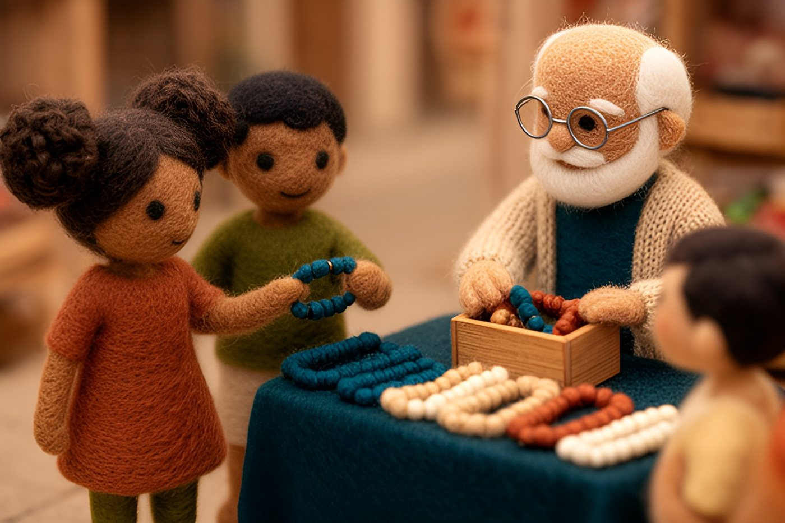
يوم السبت صنعا 10 أساور وباعا 6 منها، كل سوار بـ5 عملات. فدخلت 30 عملة. وكانت الأساور الـ10 قد كلّفت 20 عملة. فكان الربح 10 عملات، وبقيت 4 أساور. قال يوسف: «في الصيف الماضي سُكب العصير الباقي في الحوض. أما هذه فلا تفسد.» ووضع الأساور الـ4 في صندوق خشبي صغير للأسبوع القادم.
بعض البقايا لا تفسد، بل تنتظر في صندوق زبونًا جديدًا.
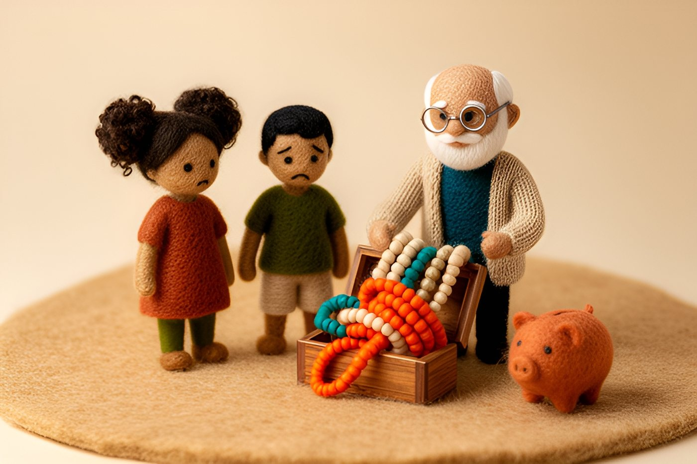
الصندوق الذي امتلأ
قال يوسف: «ما دامت لا تفسد، فلنصنع الكثير!» وفي ذلك الأسبوع صنع 30 سوارًا، كلها بلونه المفضّل: البرتقالي. ولم يُبع منها إلا 5. وسرعان ما امتلأ الصندوق ونحفت الحصّالة. رفع جدّو الصندوق وهزّه بلطف قرب أذنه وقال: «هل تسمع؟ هذه 50 عملة نائمة.»
الأشياء المنتظرة في الصندوق نقود لا يمكن إنفاقها بعد.
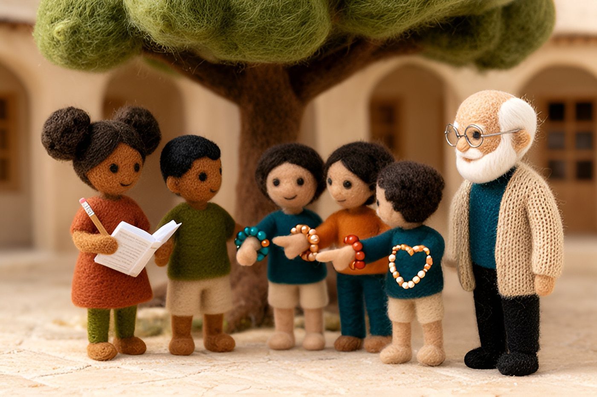
سؤال الزبائن
أخذت ملك دفترها إلى النادي الصيفي وسألت: «ما الألوان التي تحبونها؟ وماذا تشترون؟» قال أغلب الأطفال: الأزرق المخضرّ والرملي. وطلب كثيرون خرزة مميّزة عليها رمز خاص بهم: قلب أو نجمة أو قطة. كانت هذه تأخذ وقتًا أطول وتكلّف 3 عملات، فباعاها بـ8. وقبل السبت نفدت كلها.
الزبائن يخبروننا بما نصنع، إذا سألناهم.
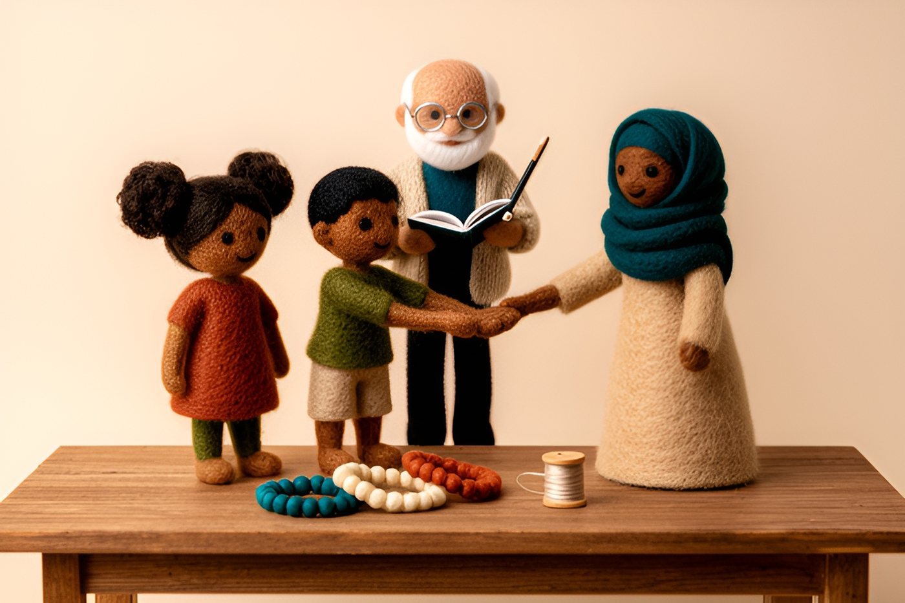
قسمة عادلة
توالت الطلبات، ولم تعد أربع أيادٍ تكفي. وصديقتهما هناء أمهر من يعقد الخيوط في الشارع. سألت: «هل أستطيع المساعدة؟» وقبل أن تُنظم خرزة واحدة، فتح جدّو دفتره وقال: «أولًا، اتفقوا على القسمة.» لكل سوار تعقده هناء عملة واحدة لها. كتبوا ذلك، ووقّع الثلاثة.
الشركاء يتفقون على القسمة قبل بدء العمل.
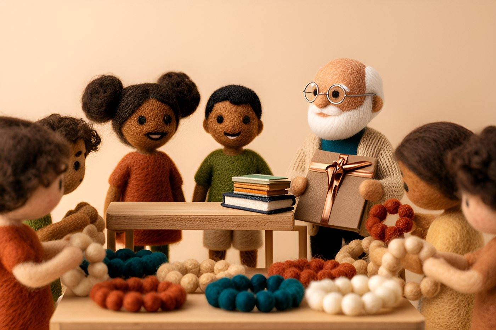
التخفيضات الكبيرة
في الأسبوع الأخير كانت 25 سوارًا برتقاليًا ما تزال نائمة في الصندوق. قالت ملك: «لنبعها بـ3. كلّفت عملتين، فيبقى لنا من كل واحد عملة.» وكتبا على لافتة صغيرة: «تخفيضات»، وقبل الظهر فرغ الصندوق. وعدّا ما في الحصّالة مرتين: 171 عملة. وثمن كتب الحكايات 160. ورسم يوسف قطة برتقالية صغيرة في أول صفحة من الكتاب الأول.
التخفيضات تعيد البضاعة المنتظرة نقودًا.
أفكار جدّو
أفكار صيف الأساور. أي فكرة منها هي الأهم في مشروع حقيقي؟
أفضل مشروع يجمع بين ما نجيده وما يريده الناس.
التكاليف الصغيرة تتجمّع، فلنحسبها كلها.
العمل الجيد يستحق سعرًا عادلًا. فالوقت والمهارة لهما قيمة.
بعض البقايا لا تفسد، بل تنتظر في صندوق زبونًا جديدًا.
الأشياء المنتظرة في الصندوق نقود لا يمكن إنفاقها بعد.
الزبائن يخبروننا بما نصنع، إذا سألناهم.
الشركاء يتفقون على القسمة قبل بدء العمل.
التخفيضات تعيد البضاعة المنتظرة نقودًا.
تسعير وحفظ وحساب
تُملأ هذه الصفحة بقلم رصاص. والإجابات مقلوبة في أسفل الصفحة.
1. ربح القطعة الواحدة
| الشيء | التكلفة | السعر | الربح |
|---|---|---|---|
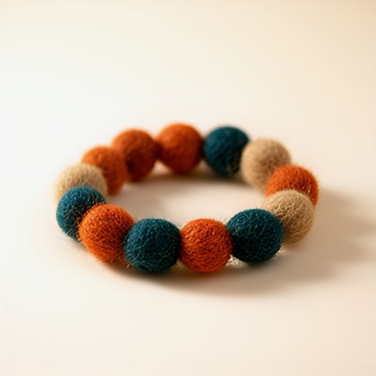 سوار | 2 | 5 | |
 رسمة رسمة | 2 | 3 | |
| سوار بخرزة مميّزة | 3 | 8 |
2. يُحفظ أم يفسد؟
عصيريُحفظيفسد كيكيُحفظيفسدرسمةيُحفظيفسد
كيكيُحفظيفسدرسمةيُحفظيفسد3. نقود نائمة في الصندوق
في الصندوق 6 أساور تنتظر، وكل سوار كلّف عملتين. كم عملة نائمة في الصندوق؟
الإجابات: 3 · 1 · 5 · يفسد، يُحفظ، يفسد، يُحفظ · 12
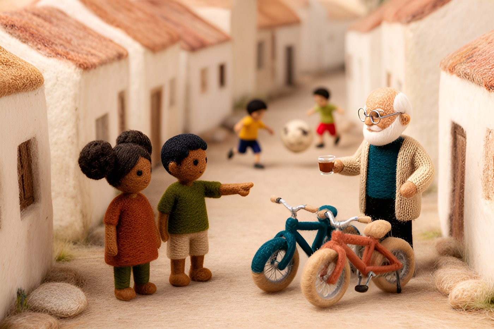
دور يوسف
في الصيف الثالث جاء دور يوسف في الاختيار. أشار إلى آخر الشارع: كل الدراجات مغبّرة، وثلاث منها إطاراتها فارغة من الهواء. قال: «الناس هنا لا يحتاجون عصيرًا آخر، بل يحتاجون دراجات تعمل.» وكان فريق الشارع يحتاج كرة قدم حقيقية ثمنها 100 عملة. هزّ جدّو رأسه ببطء: «المشكلة التي يعاني منها الناس مشروعٌ ينتظر من يبدأه.»
كل مشكلة عند الناس مشروع ينتظر من يبدأه.
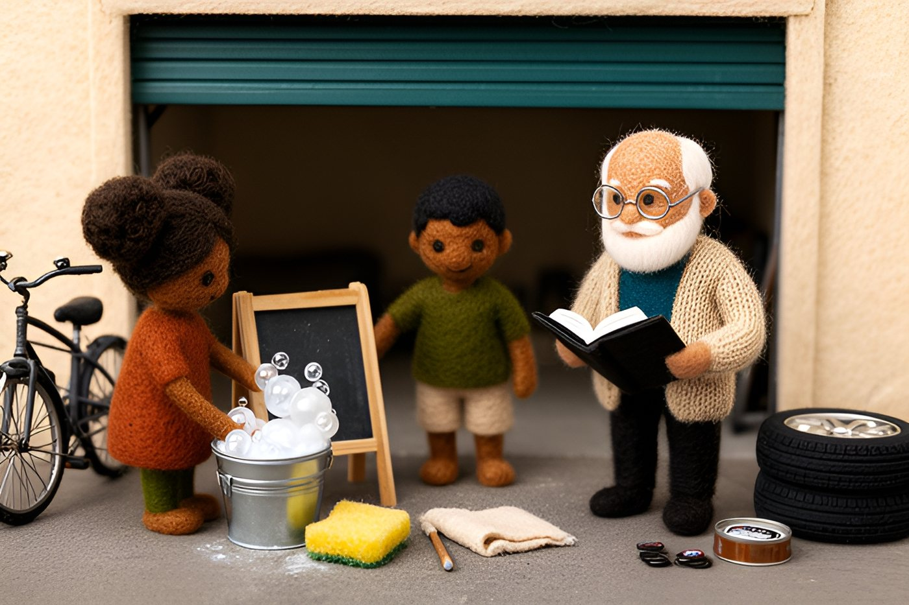
غسلة بعملة واحدة
خرج دفتر جدّو مرة أخرى. صابون وإسفنجة ودلو ماء وقطعة قماش للتجفيف. الغسلة الواحدة تكلّفهما عملة واحدة. ورقعة الإطار المثقوب تكلّف عملة واحدة أيضًا. قالت ملك: «والغسلة تستغرق 15 دقيقة، فنستطيع أن نغسل 4 في الساعة.» وكتبا الأسعار على لوح: الغسيل 3، والرقعة 3، والاثنان معًا 5.
لكل عمل تكلفة ووقت، فلنعرفهما.
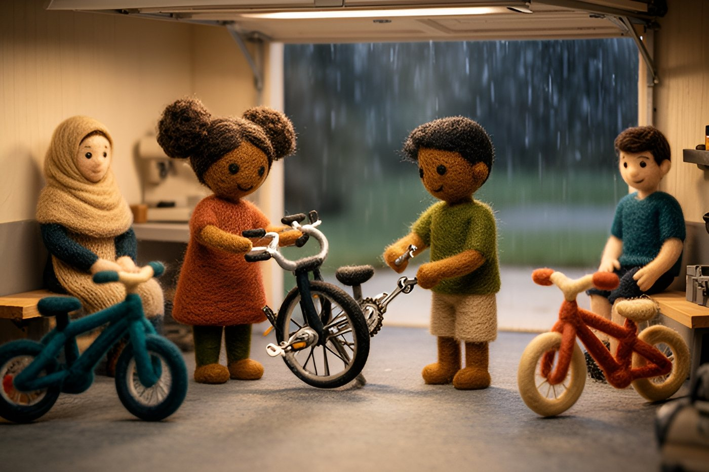
المطر مرة أخرى
في الأسبوع 3 عادت الغيوم. لا أحد يريد غسل دراجته تحت المطر. حدّق يوسف في الشارع الفارغ. ثم تذكّرت ملك صيف العصير: «في المرة الماضية كان المطر يعني عصيرًا في الحوض. هذه المرة لتكن عندنا خطة للمطر.» فانتقلا إلى مرأب جدّو، وأصلحا السلاسل والفرامل والأجراس المزعجة طوال العصر. وانتظر الناس في الداخل سعداء.
لنُعدّ خطة للأيام الصعبة قبل أن تأتي.
المنفاخ الجديد
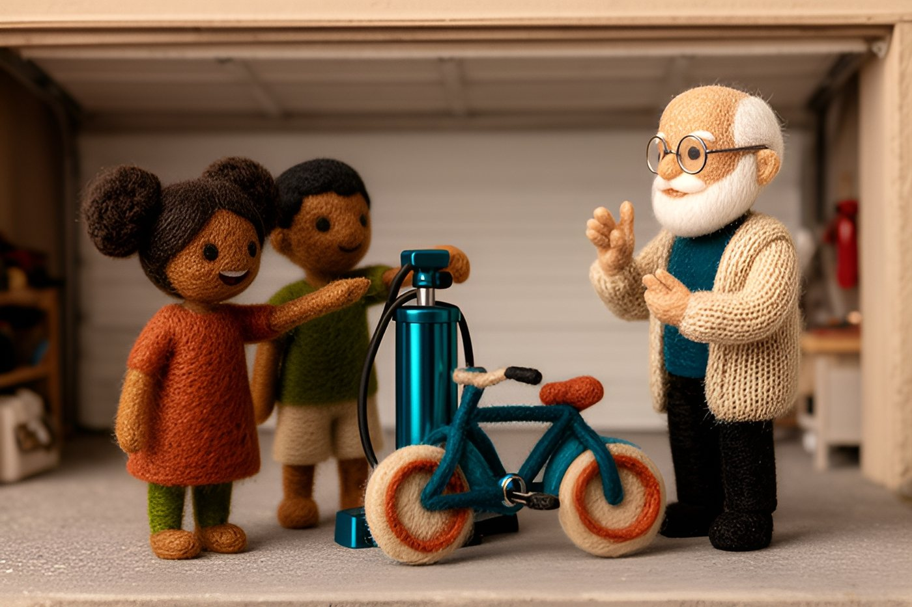
كان منفاخهما اليدوي القديم بطيئًا حتى إن الناس كانوا يملّون الانتظار. والمنفاخ الجيد ثمنه 24 عملة. قال يوسف: «هذه عملات كثيرة.» فحسب جدّو معهما: بالمنفاخ الجديد يمكنهما إصلاح دراجتين إضافيتين كل أسبوع، وكسب 6 عملات ربحًا إضافيًا. «في 4 أسابيع يسترد ثمنه. وبعدها كل عملة إضافية لكما.» فاشترياه.
الاستثمار إنفاق نقود الآن على شيء يكسب أكثر لاحقًا.
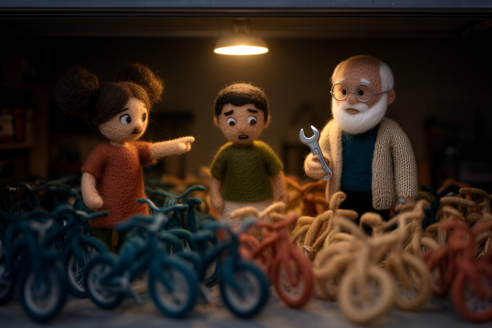
وعود كثيرة
الكل أراد المنفاخ الجديد. وكان يوسف يقول لكل زبون: «جاهزة يوم السبت!» وفي ليلة الجمعة كانت في المرأب 9 دراجات، لم يكتمل منها إلا 4. ويوم السبت جاء العم سعيد ليأخذ دراجته، فاضطر أن يعود إلى البيت ماشيًا. شعر يوسف بأسف شديد. وفي ذلك المساء وضع قاعدة جديدة: لا نعد إلا بما نستطيع إنهاءه، ونقول الوقت الحقيقي.
لنَعِد بأقل قليلًا، ونفعل أكثر قليلًا.
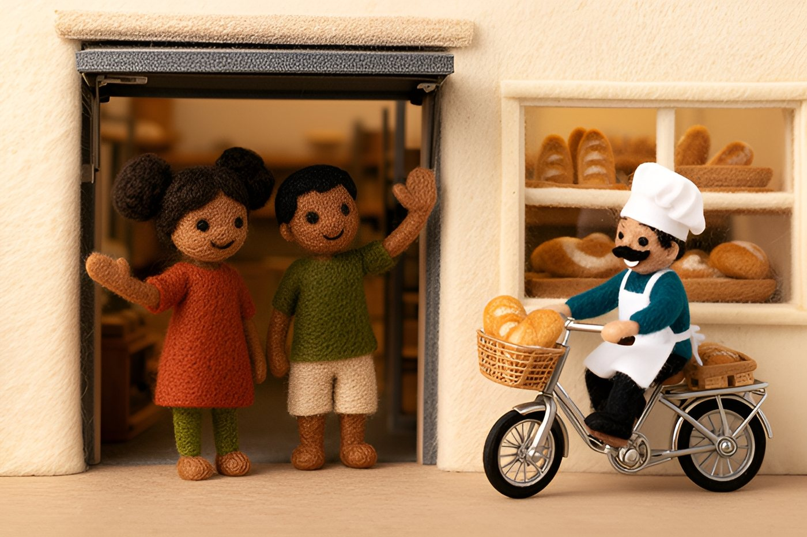
دراجة الخبّاز
كانت دراجة توصيل الخبّاز عجلتها تتمايل وسلسلتها تنزلق باستمرار. فلم يستعجلا، ونظّفا كل قطعة وجرّباها مرتين. وفي الصباح التالي مرّ الخبّاز يرنّ جرسه، وقال لكل من دخل مخبزه: «أفضل تصليح في الشارع!» ويوم السبت كان هناك طابور من الدراجات، مع أن أحدًا لم يرَ ملصقًا واحدًا.
الزبون السعيد يخبر أصدقاءه، وهذا أفضل إعلان.
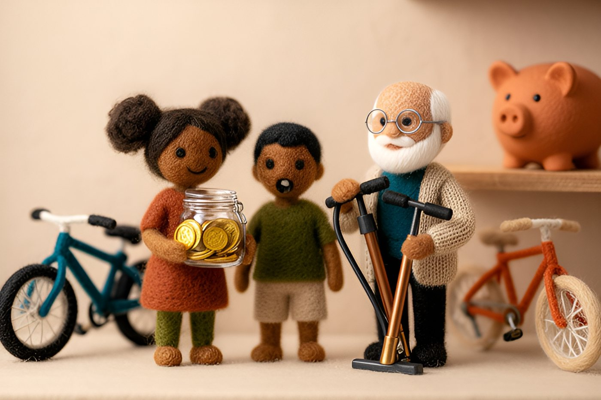
برطمان المفاجآت
كل سبت كانت ملك تضع 3 عملات في برطمان مربى قديم، وتقول: «للمفاجآت.» ورأى يوسف ذلك مملًا. ثم انشقّ خرطوم المنفاخ الجديد، والخرطوم الجديد ثمنه 9 عملات. نظر يوسف إلى الحصّالة، وهي مخصّصة للكرة. ففتحت ملك البرطمان، وكان فيه 12 عملة. وابتسمت: «مفاجآت.»
لنحتفظ ببعض النقود للمفاجآت، فيبقى الهدف في أمان.
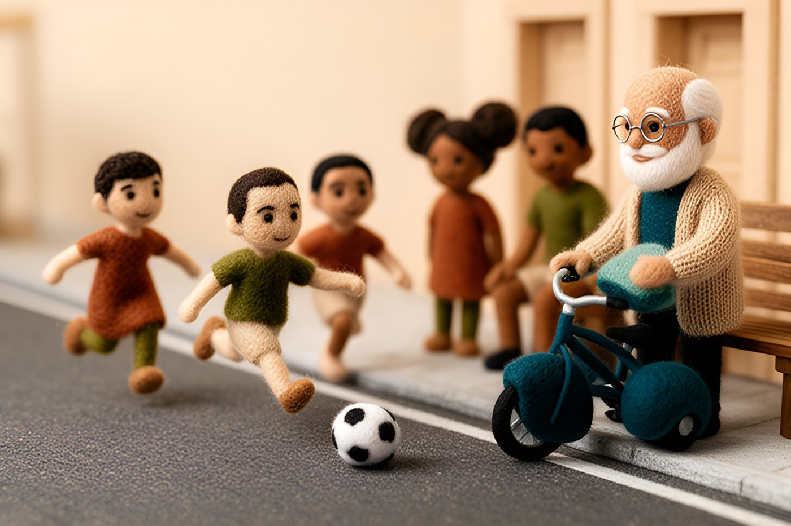
فريق الشارع
في آخر سبت عدّا ما في الحصّالة: 118 عملة. وثمن الكرة 100. وفي ذلك العصر لعب فريق الشارع كله بكرة حقيقية لأول مرة. وبعد المباراة غسل يوسف دراجة كل لاعب مجانًا. سألته ملك: «لماذا مجانًا؟» قال يوسف: «إنهم جيراننا. وفي الصيف القادم سيكونون زبائننا.»
المشروع الجيد يهتم بالشارع الذي يعيش فيه.
أفكار جدّو
أفكار صيف الدراجات. أي فكرة منها تنفع أكثر في يوم ماطر؟
كل مشكلة عند الناس مشروع ينتظر من يبدأه.
لكل عمل تكلفة ووقت، فلنعرفهما.
لنُعدّ خطة للأيام الصعبة قبل أن تأتي.
الاستثمار إنفاق نقود الآن على شيء يكسب أكثر لاحقًا.
لنَعِد بأقل قليلًا، ونفعل أكثر قليلًا.
الزبون السعيد يخبر أصدقاءه، وهذا أفضل إعلان.
لنحتفظ ببعض النقود للمفاجآت، فيبقى الهدف في أمان.
المشروع الجيد يهتم بالشارع الذي يعيش فيه.
استثمار أم إنفاق؟
تُملأ هذه الصفحة بقلم رصاص. والإجابات مقلوبة في أسفل الصفحة.
1. كم أسبوعًا لاسترداد الثمن؟
| الشيء | الثمن | زيادة كل أسبوع | أسابيع |
|---|---|---|---|
 منفاخ أسرع منفاخ أسرع | 24 | 6 | |
 لافتة كبيرة لافتة كبيرة | 10 | 5 | |
 حامل دراجات حامل دراجات | 6 | 2 |
2. استثمار أم إنفاق؟
منفاخ أسرعاستثمارإنفاق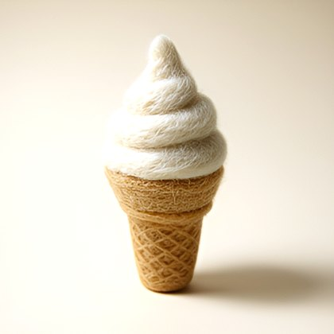
آيس كريماستثمارإنفاقلافتة كبيرةاستثمارإنفاق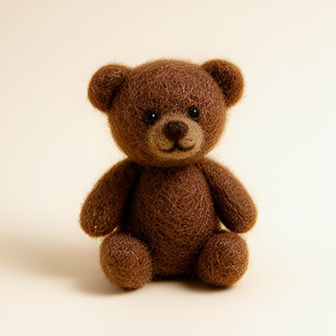
دبدوباستثمارإنفاق3. خطة اليوم الماطر: إذا لم يأتِ زبائن، يستطيع المشروع أن...
الإجابات: 4 · 2 · 3 · استثمار، إنفاق، استثمار، إنفاق
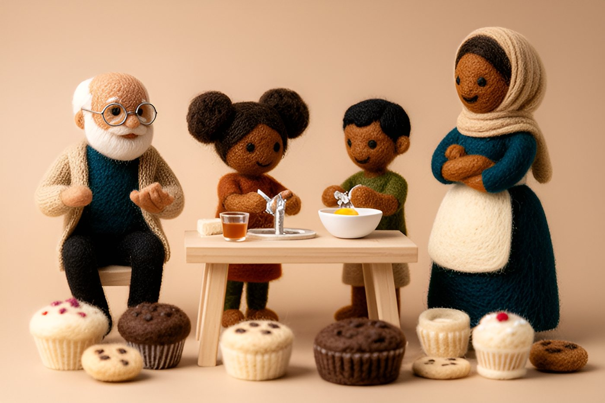
قواعد المطبخ
في الصيف الرابع أراد ملك ويوسف أكبر هدف حتى الآن: دراجة جديدة يتشاركانها، ثمنها 300 عملة. قالت ملك: «كيك!» فعقدت ماما ذراعيها: «مطبخي وقواعدي: أيدٍ نظيفة، وشعر مربوط، وشخص كبير عند الفرن في كل مرة.» ورفع جدّو كوب الشاي: «الطعام تجارة قائمة على الثقة. فالناس يأكلون ما نصنعه.»
بعض المشاريع تحتاج قواعد تحمي الناس، والطعام أولها.
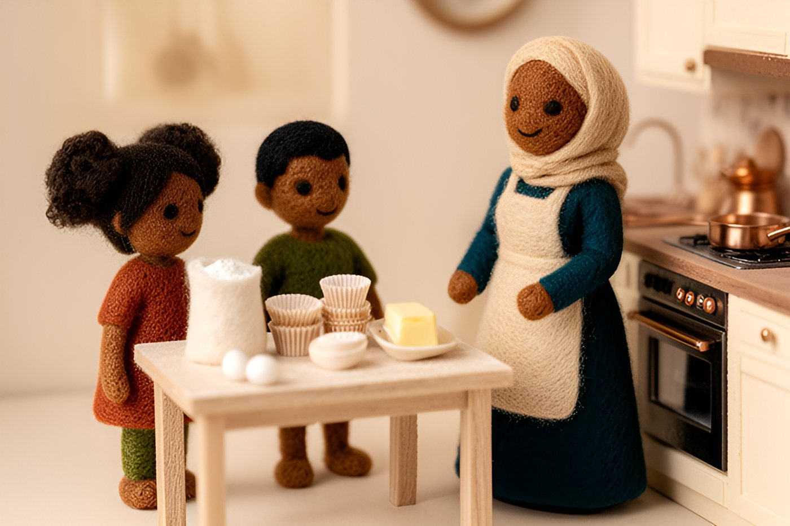
تكاليف يدفعها غيرنا
دقيق وبيض وسكر وزبدة وقوالب ورقية. الكب كيك الواحدة تكلّف عملتين، والكوكيز الواحدة تكلّف عملة واحدة. قال يوسف: «إذن الكب كيك بـ5 تعني ربح 3 عملات.» فسأل جدّو: «ومن يدفع ثمن الفرن؟» فنظرا إلى ماما. الفرن والكهرباء وغسيل الأطباق. وفي تلك الليلة أضافا سطرًا جديدًا إلى الدفتر: عملة واحدة عن كل صينية، لماما.
لنحسب أيضًا التكاليف التي يدفعها غيرنا عنّا.
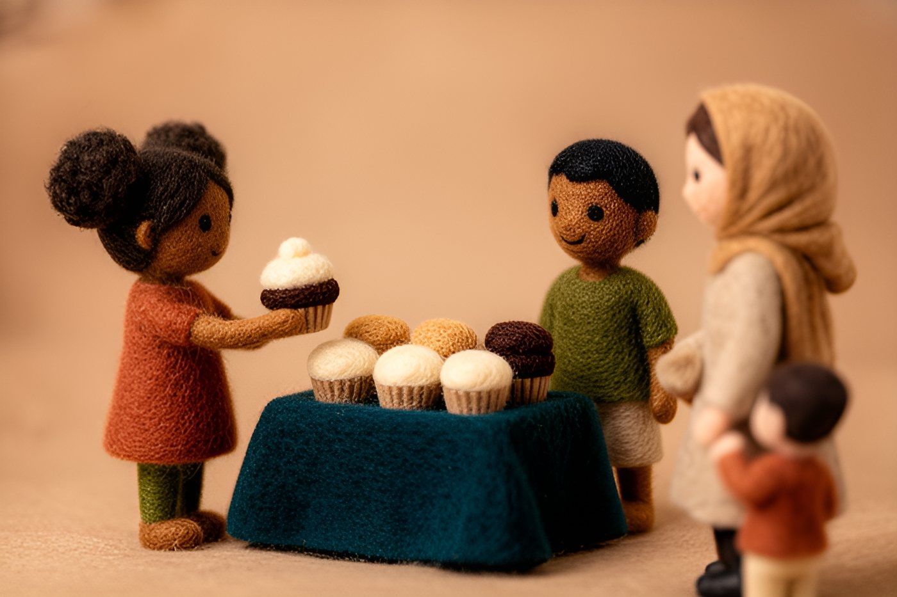
تذوّق أولًا
في السبت الأول كان الناس يمرّون بالطاولة ويواصلون السير. ثم قطّعت ملك كب كيك واحدة إلى 8 قطع صغيرة، ووضعتها في طبق: «تذوّق مجاني!» قطعة صغيرة، ثم ابتسامة، ثم: «سآخذ اثنتين.» وقبل الظهر بيع كل شيء. كب كيك واحدة مجانية باعت 14.
تذوّق صغير مجاني قد يجلب بيعًا كبيرًا.
الطلبات أولًا
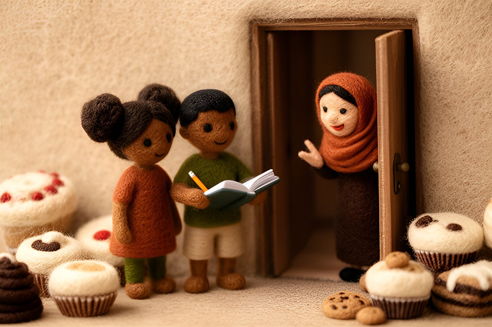
الكيك يفسد مثل العصير تمامًا. لذلك مرّ يوسف يوم الخميس على البيوت ومعه الدفتر: «هل تريدون كب كيك يوم السبت؟» فقال 14 شخصًا: نعم. فخبزا 18: الطلبات، و4 للمارّة. وفي المساء لم يبقَ إلا اثنتان، أكلهما جدّو مسرورًا. أما في صيف العصير فقد سُكب 14 كوبًا في الحوض.
إذا كانت البضاعة تفسد، فلنأخذ الطلبات أولًا ثم نصنع.
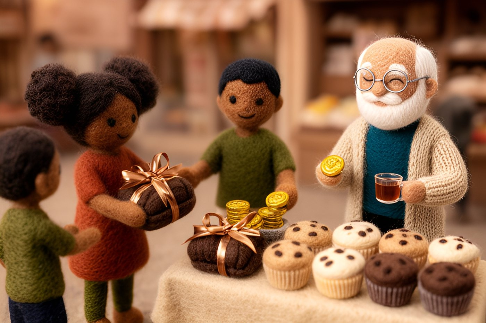
3 بـ5
كانت الكوكيز تُباع قطعة قطعة، كل قطعة بعملتين. ثم ربطت ملك 3 قطع بشريط، وكتبت: 3 بـ5. فأغلب من أراد قطعة واحدة أخذ 3. قال يوسف وهو يعدّ: «نكسب أقل من كل قطعة، لكننا نبيع أكثر بكثير.» وغمز جدّو: «والزبون يشعر بالذكاء أيضًا.»
العرض المجمّع يجعل الزبون يشتري أكثر، ونبيع نحن أكثر.
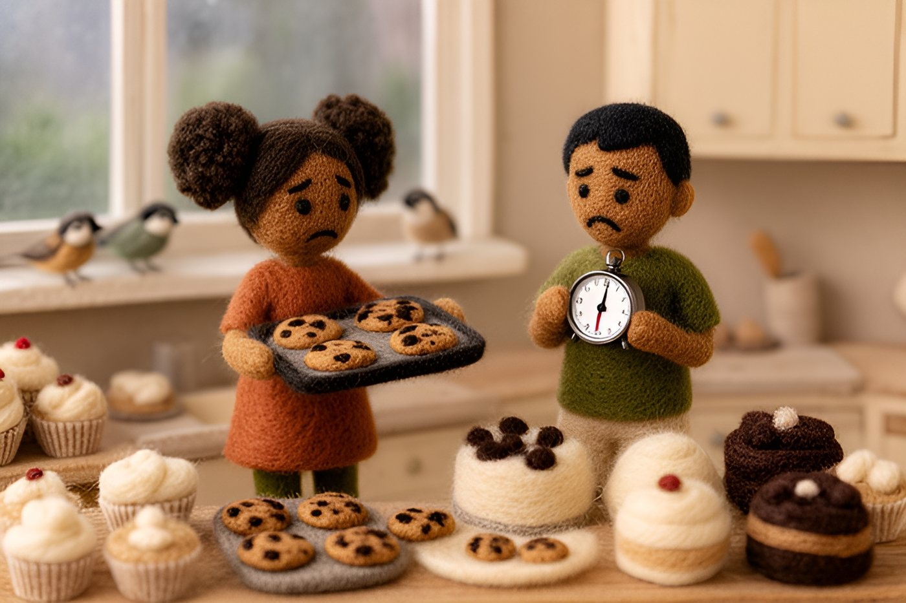
الصينية المحروقة
في صباح مزدحم كانا يضحكان كثيرًا فلم يسمع أحد المؤقّت. وخرجت صينية كوكيز كاملة أطرافها بنية داكنة. قال يوسف: «محروقة قليلًا فقط.» سألته ملك: «هل تدفع ثمن واحدة منها؟» ففكّر، ثم هزّ رأسه. أكلا القليل منها، وفتّتا الباقي للعصافير، وخبزا صينية جديدة. ولم ينسيا المؤقّت بعد ذلك أبدًا.
لا نبيع إلا ما نشتريه نحن بسرور.
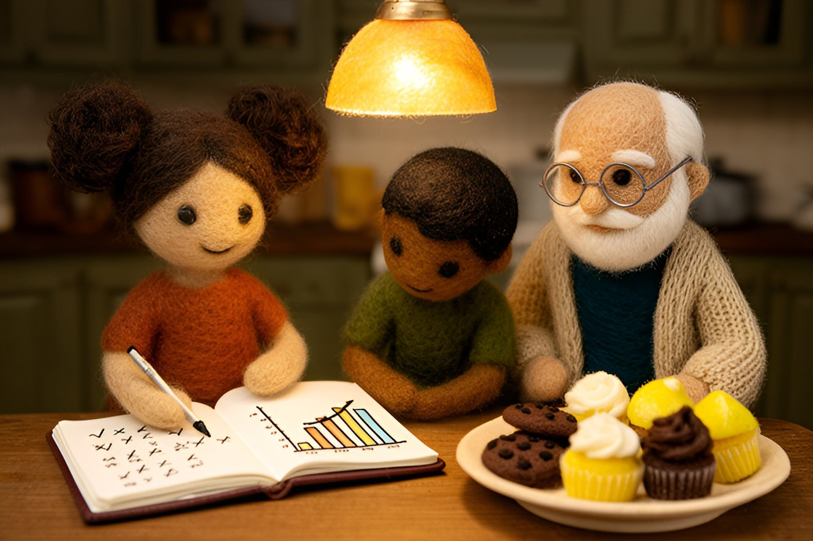
دفتر الأرقام
كل ليلة سبت كانت ملك تكتب كل شيء: ما خبزاه، وما باعاه، والنقود الداخلة، والنقود الخارجة. وبعد 6 أسابيع لاحظت شيئًا: كوكيز الشوكولاتة تنفد دائمًا، وكب كيك الليمون يبقى دائمًا، ويوم الجمعة أكثر زحامًا من السبت. قالت: «الأرقام تكلّمنا.» فخبزا شوكولاتة أكثر وليمونًا أقل، وفتحا يوم الجمعة أيضًا.
كتابة الأرقام تكشف ما ينجح.
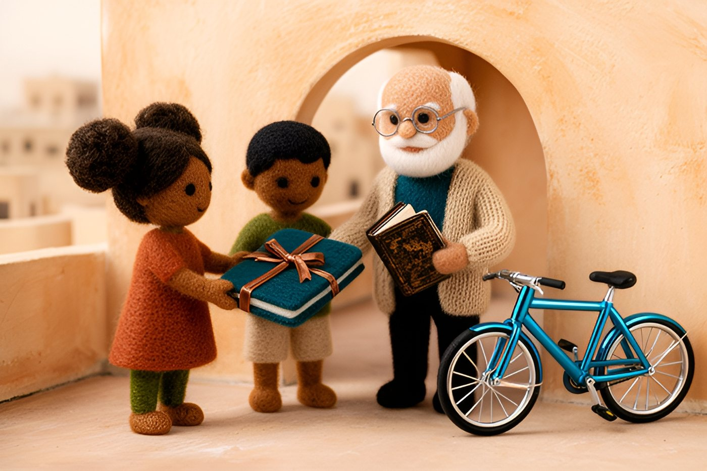
دفتر جدّو الجديد
في آخر يوم من الصيف الرابع عدّا 312 عملة. وثمن الدراجة 300. فبقيت 12 عملة، وكانا يعرفان ماذا سيشتريان بها. وفي المساء أهديا جدّو دفترًا جديدًا. ففتح دفتره القديم، وكانت كل صفحاته ممتلئة: عصير وأساور ودراجات وكيك. وقال وهو يعيد إليهما الدفتر الجديد: «هذا لصيفكما القادم.»
أفضل ربح هو ما نتعلّمه، ومن نشاركه معه.
أفكار جدّو
أفكار صيف الخَبز. أي فكرة منها تستحق التجربة أولًا؟
بعض المشاريع تحتاج قواعد تحمي الناس، والطعام أولها.
لنحسب أيضًا التكاليف التي يدفعها غيرنا عنّا.
تذوّق صغير مجاني قد يجلب بيعًا كبيرًا.
إذا كانت البضاعة تفسد، فلنأخذ الطلبات أولًا ثم نصنع.
العرض المجمّع يجعل الزبون يشتري أكثر، ونبيع نحن أكثر.
لا نبيع إلا ما نشتريه نحن بسرور.
كتابة الأرقام تكشف ما ينجح.
أفضل ربح هو ما نتعلّمه، ومن نشاركه معه.
من الفرن إلى الطاولة
تُملأ هذه الصفحة بقلم رصاص. والإجابات مقلوبة في أسفل الصفحة.
1. ربح الصينية
| الشيء | صُنع × التكلفة | بِيع × السعر | الربح |
|---|---|---|---|
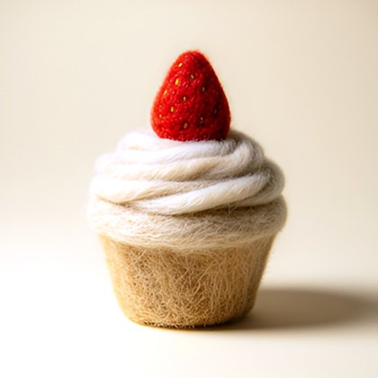 كب كيك | 10 × 2 | 8 × 5 | |
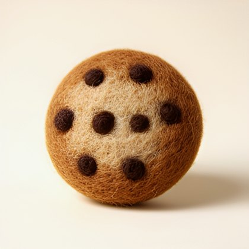 كوكيز | 12 × 1 | 12 × 2 | |
| كيكة عيد ميلاد | 1 × 12 | 1 × 20 |
2. يُباع أم لا؟
كيك الأسبوع الماضييُباعلا يُباع3. ثلاث قطع بـ5
القطعة الواحدة بعملتين، و3 قطع بـ5. كم عملة تُوفَّر عند شراء 3 معًا؟
الإجابات: 20 · 12 · 8 · يُباع، لا يُباع، لا يُباع، يُباع · 1
دورك: خطة مشروع صغير
تُملأ هذه الصفحة بقلم رصاص. ويكون التخطيط مع أحد الكبار، وشراء المستلزمات معه.
نقود دخلت − نقود صُرفت = الربح
 حلم الادّخار
حلم الادّخارلنتحدّث
أسئلة للعائلة أو للفصل بعد كل حكاية. لا توجد إجابات خاطئة.
- لماذا سُكب 14 كوبًا من العصير في الحوض؟ وماذا كان يمكن فعله بطريقة مختلفة؟
- هل كان الركض خلف السيدة لإرجاع العملات الـ6 الزائدة صوابًا؟ ولماذا؟
- أرادت ملك البيع بـ3 عملات. لماذا رأى جدّو أن 5 أعدل؟
- ما المشكلة في 30 سوارًا برتقاليًا؟
- هل كان المنفاخ الجديد يستحق 24 عملة؟ وكيف نعرف ذلك؟
- هل حدث يومًا وعد كان الوفاء به صعبًا؟ وماذا حدث؟
- لماذا أخذا الطلبات قبل الخَبز؟
- ماذا يُكتب أولًا في دفتر جدّو الجديد؟
طريقة لعب الانتربرونور الصغير
في اللعبة مشروع صغير خاص بك لصيف من 12 أسبوعًا، تمامًا مثل ملك ويوسف: اختيار المشروع، وتحديد هدف للادّخار، وخطة واحدة كل أسبوع.
اللعب مجاني على adam.ahmedhaz.com/little في أي متصفح. واللعبة تعمل دون اتصال بعد فتحها أول مرة، بالعربية والإنجليزية. ويستغرق الصيف نحو 15 دقيقة.

بداية الصيف

- كتابة الاسم الأول. ويبقى على الجهاز فقط.
- اختيار صورتك في اللعبة.
- اختيار المشروع: كشك العصير، أو رسومات وأساور، أو غسيل الدراجات وإصلاحها، أو كيك وكوكيز.
- اختيار الهدف: كرة قدم (100)، أو مجموعة كتب (160)، أو هدية لماما (220)، أو دراجة جديدة (300).
العدّادات الثلاثة
- نقود: كل ما في صندوقك. الصنع يكلّف نقودًا، والبيع يعيدها.
- طاقة: البيع والسهر يستهلكانها، والراحة تعيدها. تحت 40 يأتي النعاس. ومن 70 فما فوق يُفتح خيار ثالث حكيم.
- ابتسامات: مقدار حب الزبائن لكشكك. السعر المعتدل والجودة الجيدة يرفعانها.
- شريط الحصّالة يوضّح المسافة الباقية إلى الهدف.
خطة الأسبوع
- نظرة إلى طقس يوم السوق. الأيام الحارة تجلب زبائن عصير أكثر، والمطر يقلّلهم.
- اختيار السعر: رخيص أو معتدل أو غالٍ.
- اختيار الكمية. وجدّو يتوقّع عدد الزبائن.
- اختيار نشاط واحد: صنع ملصق، أو تدريب، أو مذاكرة، أو راحة ولعب.
يوم السوق والنتيجة

- مشاهدة الزبائن وهم يصلون، أو الضغط على «هيا نتخطّى».
- قراءة النتيجة: نقود دخلت، ونقود صُرفت، والربح.
- العصير والكيك يفسدان. أما الرسومات وعُدّة الغسيل فتُحفظ للأسبوع القادم.
- إنفاق بعض النقود على شيء ممتع، أو ادّخارها في الحصّالة.
المعضلات والباب الحكيم

- أغلب الأسابيع تأتي بمعضلة صغيرة لها جوابان معقولان، ولكل منهما ثمن.
- مع طاقة 70 أو أكثر يُفتح باب ثالث: الباب الحكيم.
- وبعد كل اختيار يشارك جدّو فكرة تدخل دفتر الملصقات.
الصدى والواجبات والنعاس

- بعض الاختيارات تعود بعد أسابيع، ومعها رقم الأسبوع الذي جاءت منه.
- المذاكرة مرة كل 3 أسابيع على الأقل، وإلا أغلقت ماما أو بابا الكشك أسبوعًا.
- تحت 40 من الطاقة تتمايل الأرقام ويُحسب الباقي خطأً. والراحة تصلح ذلك.
نهاية الصيف

- الوصول إلى الهدف قبل نهاية الأسبوع 12 يعني الفوز به.
- بطاقة التقييم تعطي نجومًا للحساب والعملاء والتوازن والأمانة.
- لا نهايات قاسية. وإذا لم يكتمل الهدف يلخّص جدّو ما تعلّمته ويعرض صيفًا آخر.
المشاريع الأربعة
| المشروع | تكلفة الواحدة | الأسعار | البقايا |
|---|---|---|---|
| كشك العصير | 1 | 2 · 3 · 5 | تفسد |
| رسومات وأساور | 2 | 3 · 5 · 8 | تُحفظ |
| غسيل الدراجات وإصلاحها | 1 | 2 · 3 · 5 | تُحفظ |
| كيك وكوكيز | 2 | 3 · 5 · 8 | تفسد |
نصائح جدّو لصيف ناجح
- صنع كمية قريبة من توقّع جدّو.
- السعر المعتدل بداية جيدة.
- الراحة قبل أن تنزل الطاقة تحت 40.
- المذاكرة مرة كل 3 أسابيع على الأقل.
- الأشياء الممتعة جميلة، لكن ليس كل أسبوع.
كلمات مهمة
ما ندفعه لنصنع الشيء.
ما يدفعه الزبون مقابل الشيء.

النقود الداخلة ناقص النقود المصروفة.

من يشتري منك.

ما صُنع ولم يُبع.
أشياء لا تفسد، تنتظر أن تُباع.
الاحتفاظ بالنقود الآن من أجل شيء أكبر لاحقًا.
زبون يطلب الشيء قبل أن يُصنع.
إنفاق النقود على شيء يساعد على كسب المزيد.

من يشارك في العمل وفي الربح.
الانتربرونور الصغير
تقديرًا للتخطيط والتسعير والحساب والادّخار، مثل رواد الأعمال الحقيقيين.
أربعة فصول صيف، وأربعة مشاريع صغيرة. ومع العصير والخرز والمنفاخ ووعاء الخَبز ودفتر جدّو، يتعلّم ملك ويوسف ما يعرفه كل صاحب مشروع: التكلفة والسعر والربح والبضاعة والاستثمار والزبائن والادّخار والأمانة.
اللعبة مجانية
adam.ahmedhaz.com/little
بلا إعلانات · بلا حسابات · لا شيء للشراء